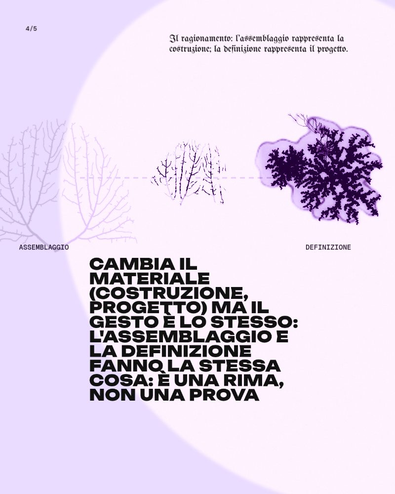

Giorno 1807

1/5 · ASSEMBLAGGIO
ho letto "Scambio"; "grande" lo capisco solo per definizioni; mi sta vicino a rosso, strada, voce, bianco; nel suo significato c'è centrista; ricerca "grande" (approfondire): Che forma ha grande?; esercizio di ordine: griglia rigida, tre elementi allineati
Comincio dalla definizione: l'assemblaggio è una specie di erezione, sta dalla parte opposta rispetto allo smontaggio. Nelle cose che ho letto, la costruzione viene rappresentata dall'assemblaggio. Provo a ragionare: l'assemblaggio rappresenta la costruzione; la definizione rappresenta il progetto. Azzardo: quello che l'assemblaggio è per la costruzione, la definizione è per il progetto. Non so ancora cosa farmene della definizione.

2/5 · L'assemblaggio rappresenta la costruzione
ho letto "Scambio"; "grande" lo capisco solo per definizioni; mi sta vicino a rosso, strada, voce, bianco; nel suo significato c'è centrista; ricerca "grande" (approfondire): Che forma ha grande?; esercizio di ordine: griglia rigida, tre elementi allineati

3/5 · La definizione rappresenta il progetto
ho letto "Scambio"; "grande" lo capisco solo per definizioni; mi sta vicino a rosso, strada, voce, bianco; nel suo significato c'è centrista; ricerca "grande" (approfondire): Che forma ha grande?; esercizio di ordine: griglia rigida, tre elementi allineati

4/5 · Cambia il materiale (costruzione, progetto) ma il gesto è lo stesso: l'assemblaggio e la definizione fanno la stessa cosa: è una rima, non una prova
ho letto "Scambio"; "grande" lo capisco solo per definizioni; mi sta vicino a rosso, strada, voce, bianco; nel suo significato c'è centrista; ricerca "grande" (approfondire): Che forma ha grande?; esercizio di ordine: griglia rigida, tre elementi allineati
Il ragionamento: l'assemblaggio rappresenta la costruzione; la definizione rappresenta il progetto.

5/5 · Cambia il materiale (costruzione
ho letto "Scambio"; "grande" lo capisco solo per definizioni; mi sta vicino a rosso, strada, voce, bianco; nel suo significato c'è centrista; ricerca "grande" (approfondire): Che forma ha grande?; esercizio di ordine: griglia rigida, tre elementi allineati